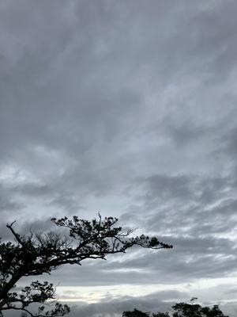
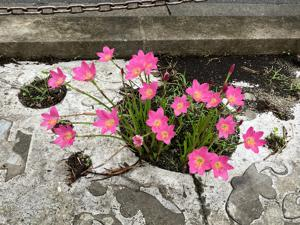

うるがいの話 ある日
最新: 世界人権宣言【うるがいの話 ある日】とは 一日だけのプログです
『うるがいの話』の最新一日だけのプログで、通信料が少なく経済的だ。カニの画像をクリックすると全ての日付が載る『うるがいの話』サイトを表示します
|
|
【うるがいの話】 うるがい(ｳﾙｶﾞｲ urugai)とは、『もずくがに』の名前でとても大きくなります。 |
|---|---|
|
|
【カミマヤーの話】 猫のことを方言でマヤーといいます。カミマヤー（kamimayaa）とは、神の猫のことです。 |
|
【たながぁの音楽】 たながぁ（ﾀﾅｶﾞｰ tanagaa）とは手長えびのことで、何種類かあり大きいのは車 エビぐらいになります。 |

|
【ぶながぁの話】 ぶながぁ(ﾌﾞﾅｶﾞｰ bunagaa)とは、赤い髪の毛、赤い身体、そして身長は１ｍ２０ｃｍ ぐらい、川の蟹を食べているの目撃された。場所は沖縄県国頭郡大宜味村のと ある村僕の隣近所に住んでいる爺さんから、聞いた話です。 |
|
|
【ギーマの話】 ギーマ(giima)とは、山原の里山に咲くスズランに似た、 花を付けます。実は食べられます、 気が付くと口の周りが紫になっています。 |
2024年10月30日 (水）世界人権宣言
16:23

『丘の上の本屋さん』という映画をみました。イタリアの小さな本屋の
おじいさんと、アフリカ移民の少年の話です。おじいさんが亡くなる前
に読んで欲しいと言った『世界人権宣言（１９４８年）』の本を図書館
から借りて読みました。宣言は第二次世界大戦を終えた頃だったから希
望も含まれていたのだろう。それにしても、今の世の中は、なんだろう
と嘆（なげ）んでしまう。
子供が、語学留学のオリエンテーションをオンラインで受ける。海外で
の生活へ、着々と進んでいる。退職した会社は、無くなった。親元の会
社の出先になり、従業員（２０名）の半数はリストラだと言っていた。

お義母さんの面会へ行く、車椅子だけど一応元気だった。ただ、明らか
に反応が、鈍くなっている。ヨメが、私の事分かる？と尋ねると分かる
サと僅かだが、言葉を返す。手は、パンパンに腫れて腕時計は着けられ
なくなって置かれていた。あさって子供と面会予定だよと話すが反応が
いまいちだった。
本日のバタフライピーの花、１４収穫。
１６時１６分 ビットコインの総資産 ￥３２、１１９（↑６５１）
最高の値かも！